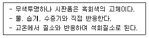
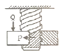
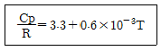
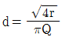
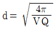
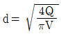
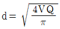
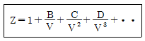
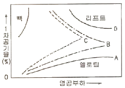
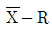

가스기능장 (2012-07-22 기출문제)
1과목: 임의 구분
1. 공기를 압축하여 냉각시키면 액체공기로 된다. 다음 설명 중 옳은 것은?
- 산소가 먼저 액화된다.
- 질소가 먼저 액화된다.
- 산소와 질소가 동시에 액화된다.
- 산소와 질소의 액화온도 차이가 매우 크다.
(정답률: 89%)

2. 다음 [보기]의 특징을 가지는 물질은?

- CaC2
- P4S3
- NaOCl
- KH
(정답률: 93%)
3. 굴착공사에 의한 도시가스배관 손상방지 기준 중 굴착 공사자가 공사 중에 시행하여야 할 기준에 대한 설명으로 틀린 것은?
- 가스안전 영향평가 대상 굴착공사 중 가스배관의 수직, 수평변위 및 지반침하의 우려가 있는 경우에는 가스배관변형 및 지반침하 여부를 확인한다.
- 가스배관 주위에서는 중장비의 배치 및 작업을 제한하여야 한다.
- 계절 온도변화에 따라 와이어 로프 등의 느슨해짐을 수정하고 가설구조물의 변형유무를 확인하여야 한다.
- 굴착공사에 의해 노출된 가스배관과 가스안전영향평가 대상범위 내의 가스배관은 주간 안전점검을 실시하고 점검표에 기록한다.
(정답률: 87%)
4. 다음 [그림]과 같이 수직하방향의 하중 Qkg을 받고 있는 사각나사의 너트를 그림과 같은 방향의 회전력 Pkg을 주어 풀고자 한다. 필요한 힘 P를 구하는 식은? (단, 나사는 1줄 나사이며, 나사의 경사각 α, 마찰각은 ρ 이다.)

- P=Q∙tan(α-ρ)
- P=Q∙tan(α+ρ)
- P=Q∙tan(ρ-α)
- P=Q∙tan(1-ρ/α)
(정답률: 89%)
5. 다음 중 고압가스 제조설비의 사용개시 전 점검사항이 아닌 것은?
- 가스설비에 있는 내용물의 상황
- 비상전력 등의 준비상황
- 개방하는 가스설비와 다른 가스설비와의 차단상황
- 가스설비의 전반적인 누출 유무
(정답률: 64%)
6. 질소의 정압 몰열용량 Cp [J/molㆍK] 가 다음과 같고 1mol의 질소를 1atm 하에서 600℃ 로부터 20℃로 냉각하였을 때 발생하는 열량은 약 몇 kJ 인가? (단, R 은 이상기체상수이다.)

- 15.6
- 16.6
- 17.6
- 18.6
(정답률: 55%)
7. 이동식 부탄연소기용 용접용기에의 액화석유가스 충전 기준으로 틀린 것은?
- 제조 후 15년이 지나지 않은 용접용기일 것
- 용기의 상태가 4급에 해당하는 흠이 없을 것
- 캔 밸브는 부착한지 2년이 지나지 않을 것
- 사용상 지장이 있는 흠, 우그러짐, 부식 등이 없을 것
(정답률: 74%)
8. 다음 중 가스저장 용기 내에서 폭발성 혼합가스가 생성하는 주된 원인이 되는 경우는?
- 물 전해조의 고장에 의한 산소 및 수소의 혼합 충전
- 잔류 산소가 있는 용기 내에 아르곤의 충전
- 잔류 천연가스 용기 내에 메탄의 충전
- 유기액체를 혼입한 용기 내에 탄산가스의 충전
(정답률: 82%)
9. Q = (U2-U1) + AW는 열역학 제 1법칙의 식이다. 다음 중 틀린 것은?
- A : 열의 일당량
- Q : 물질에 주어진 열량
- (U2-U1) : 내부에너지의 변화
- W : 물질계가 외부로 한 일
(정답률: 81%)
10. 용기ㆍ냉동기 또는 특정설비(이하 ‘용기 등’) 검사의 일부를 생략할 수 있는 경우는?
- 시험ㆍ연구개발용으로 수입하는 것
- 수출용으로 제조하는 것
- 용기 등의 제조자 또는 수입업자가 견본으로 수입하는 것
- 검사를 실시함으로써 용기 등에 손상을 입힐 우려가 있는 것
(정답률: 76%)
11. 어떤 기체 100mL를 취해서 가스분석기에서 CO2를 흡수시킨 후 남은 기체는 88mL이며, 다시 O2를 흡수시켰더니 54mL가 되었다. 여기서 다시 CO를 흡수시키니 50mL가 남았다. 잔존 기체가 질소일 때 이 시료기체 중 O2의 용적백분율(%)은?
- 34%
- 38%
- 46%
- 50%
(정답률: 62%)
12. 다음 기체 중 금속과 결합하여 착이온을 만드는 것은?
- CH4
- CO2
- NH3
- O2
(정답률: 73%)
13. 온도 32℃의 외기 1,000kg/h와 온도 26℃의 환기 3,000kg/h를 혼합할 때 혼합공기의 온도는 얼마인가?
- 26℃
- 27.5℃
- 29.0℃
- 30.2℃
(정답률: 73%)
14. 액화석유가스 저장탱크를 지상에 설치하는 경우 냉각살수 장치를 설치하여야 한다. 구형저장탱크에 설치하여야 하는 살수장치는?
- 살수관식
- 확산판식
- 노즐식
- 분무관식
(정답률: 84%)
15. LP 가스의 일반적인 성질로서 옳지 않은 것은?
- 물에는 녹지 않으나, 알콜과 에테르에는 용해한다.
- 액체는 물보다 가볍고, 기체는 공기보다 무겁다.
- 기화는 용이하나, 기화하면 체적의 팽창율은 적다.
- 증발잠열이 커서 냉매로도 사용할 수 있다.
(정답률: 67%)
16. 아세틸렌에 대한 설명으로 옳은 것은?
- 아세틸렌에 접촉하는 부분에 사용되는 재료 중 동또는 동 함유량이 52%를 초과하는 동합금을 사용하지 아니한다.
- 아세틸렌의 충전용 교체밸브는 충전하는 장소에서 격리하여 설치한다.
- 아세틸렌을 1.5MPa의 압력으로 압축하는 때에는 아황산가스를 희석제로 첨가한다.
- 아세틸렌 중의 산소용량이 전체 용량의 4% 이상인 경우에는 압축하지 아니한다.
(정답률: 65%)
17. 압축기에서 윤활의 목적이 아닌 것은?
- 마찰시 생기는 열을 제거한다.
- 소요 동력을 감소시킨다.
- 실린더의 벽과 피스톤의 마찰로 인한 마모를 방지한다.
- 기계효율을 감소시킨다.
(정답률: 86%)
18. 가스 배관의 관경을 구하는 식으로 옳은 것은?




(정답률: 79%)
19. 고압가스 특정제조 시설에서 산소의 저장능력이 4만m3를 초과한 경우 제 2종 보호시설까지의 안전거리는 몇 m 이상을 유지하여야 하는가?
- 8
- 12
- 14
- 16
(정답률: 64%)
20. 용접이음이 리벳이음과 비교한 장점이 아닌 것은?
- 기밀성이 좋다.
- 조인트 효율이 높다.
- 변형하기 어렵고 잔류응력을 남기지 않는다.
- 리벳팅과 같이 소음을 발생시키지는 않는다.
(정답률: 84%)
2과목: 임의 구분
21. 어떠한 변화를 과정 중에 PV/T가 일정하게 유지되는 어떤 기체가 0℃, 1atm에서 2.5m3ㆍmol-1의 체적을 가지고 있다. 이 기체의 초기조건 0℃, 1atm에서 25℃, 5atm으로 압축될 때 최종 부피는 약 몇 m3 이 되는가? (단, 절대온도는 273.15K 이다.)
- 0.24m3
- 0.55m3
- 0.83m3
- 1.10m3
(정답률: 58%)
22. 냉매의 구비조건 중 화학적 성질에 대한 설명으로 옳은 것은?
- 불활성이 아니고 부식성이 있을 것
- 윤활유에 용해할 것
- 인화 및 폭발의 위험성이 없을 것
- 증기 및 액체의 점성이 클 것
(정답률: 89%)
23. 온도 200℃, 부피 400L의 용기에 질소 140kg을 저장할 때 필요한 압력을 Van der Waals 식을 이용하여 계산하면 약 몇 atm 인가? (단, a = 1.351atm ㆍ L2/mol2, b= 0.0386L/mol 이다.)
- 36.3
- 363
- 72.6
- 726
(정답률: 54%)
24. Methane 80%, Ethane 15%, Propane 4%, Butane 1%의 혼합 가스의 공기 중 폭발 하한계 값은? (단, 폭발 하한계 값은 Methane 5.0%, Ethane 3.0%, Propane 2.1%, Butane 1.8% 이다.)
- 2.15%
- 4.26%
- 5.67%
- 10.28%
(정답률: 71%)
25. 가연성가스 또는 독성가스 설비 등의 수리를 할 때에는 그 내부의 가스를 불활성가스 등으로 치환하여야 한다. 가스설비의 내용적이 몇 m3 이하인 것에 대하여는 가스 치환작업을 아니할 수 있는가?
- 0.5
- 1
- 3
- 5
(정답률: 65%)
26. 염소가스는 수은법에 의한 식염의 전기분해로 얻을 수 있다. 이 때 염소가스는 어느 곳에서 주로 발생하는가?
- 수은
- 소금물
- 나트륨
- 인조흑연(탄소판)
(정답률: 87%)
27. 다음 중 고압가스 충전용기에 대한 정의로써 옳은 것은?
- 고압가스의 충전질량 또는 충전압력의 1/2 미만이 충전되어 있는 상태의 용기
- 고압가스의 충전질량 또는 충전압력의 1/2 이상이 충전되어 있는 상태의 용기
- 고압가스의 충전무게 또는 충전부피의 1/2 미만이 충전되어 있는 상태의 용기
- 고압가스의 충전무게 또는 충전부피의 1/2 이상이 충전되어 있는 상태의 용기
(정답률: 84%)
28. 압력의 단위인 torr에 대하여 바르게 나타낸 것은?
- 표준중력장에서 25℃의 수은 1㎜ 에 해당하는 압력
- 표준중력장에서 0℃의 수은 1㎜ 에 해당하는 압력
- 표준중력장에서 25℃의 수은 760㎜ 에 해당하는 압력
- 표준중력장에서 0℃의 수은 760㎜ 에 해당하는 압력
(정답률: 63%)
29. 액화석유가스저장탱크를 지하에 설치할 경우에는 집수구를 설치하여야 한다. 이에 대한 설명으로 옳은 것은?
- 집수구는 가로, 세로, 깊이가 각각 50cm 이상의 크기로 한다.
- 집수관은 직경을 80A 이상으로 하고, 집수구 바닥에 고정한다.
- 검지관은 직경 30A 이상으로 3개소 이상 설치한다.
- 집수구는 저장탱크 바닥면보다 높게 설치한다.
(정답률: 84%)
30. 지하에 설치하는 고압가스 저장탱크의 설치기준에 대한 설명으로 틀린 것은?
- 저장탱크실은 일정규격을 가진 수밀콘크리트로 시공한다.
- 지면으로부터 저장탱크의 정상부까지의 깊이는 60cm 이상으로 한다.
- 저장탱크를 2개 이상 인접하여 설치하는 경우에는 상호간에 1m 이상의 거리를 유지한다.
- 저장탱크의 외면에는 부식방지코팅 등 화학적 부식 방지를 위한 조치를 한다.
(정답률: 69%)
31. 비리알 전개(Virial expansion)는 다음 식으로 표현 된다. 차수가 높을수록 Z 는 어떻게 되는가?

- 비례적으로 증가한다.
- 지수함수로 증가한다.
- 차수와 무관하다.
- 급격히 감소한다.
(정답률: 74%)
32. 동일한 부피를 가진 수소와 산소의 무게를 같은 온도에서 측정하였더니 같은 값이었다. 수소의 압력이 2atm 이라면 산소의 압력은 몇 atm 인가?
- 0.0625
- 0.125
- 0.25
- 0.5
(정답률: 81%)
33. CH4, CO2 및 수증기(H2O)의 생성열을 각각 17.9, 94.1, 57.8 kcal/mol 이라 할 때 메탄의 연소열은 몇 kcal/mol 인가?
- 39.4
- 54.2
- 191.8
- 234.7
(정답률: 67%)
34. 다음 중 energy 의 형태가 아닌 것은?
- 일
- 열
- 엔트로피
- 전기
(정답률: 84%)
35. 카르노(carnot) 사이클의 과정 순서로 옳은 것은?
- 등온팽창 - 등온압축 - 단열팽창 - 단열압축
- 등온팽창 - 단열팽창 - 등온압축 - 단열압축
- 등온팽창 - 단열압축 - 단열팽창 - 등온압축
- 등온팽창 - 등온압축 - 단열압축 - 단열팽창
(정답률: 83%)
36. 다음 가스의 비열에 관한 설명 중 틀린 것은?
- 정압비열(Cp)은 일정압력 조건에서 측정한다.
- 정적비열(Cv)과 정압비열(Cp)의 단위는 같다.
- Cp/Cv 를 바열비라고 한다.
- 정압비열(Cp)은 정적비열(Cv) 보다 항상 작다.
(정답률: 79%)
37. 다음은 분젠식 연소방식의 가스(제조가스, 천연가스, LP가스)에 따른 연소특성에 대한 그림이다. 이 중 LP가스에 해당하는 것은?

- A
- B
- C
- D
(정답률: 80%)
38. 지식경제부장관이 도시가스 사업자에게 조정명령을 할 수 없는 사항은?
- 가스공급 계획의 조정
- 도시가스 요금 등 공급 조건의 조정
- 도시가스의 열량ㆍ압력 및 연소성의 조정
- 대표자 변경의 조정
(정답률: 85%)
39. 다음 중 내부결함 검사에 사용하는 비파괴 검사방법으로 가장 적합한 것은?
- 초음파탐상 검사
- 자기(자분)탐상 검사
- 침투탐상 검사
- 육안 검사
(정답률: 90%)
40. 게이지 압력으로 30cmHg는 절대압력으로 몇 mbar에 해당 하는가?
- 1096mbar
- 12⑤mbar
- 1359mbar
- 1413mbar
(정답률: 70%)
3과목: 임의 구분
41. 다음 독성가스와 제독제가 옳지 않게 짝지어진 것은?(오류 신고가 접수된 문제입니다. 반드시 정답과 해설을 확인하시기 바랍니다.)
- 염소 - 가성소다 및 탄산소다 수용액
- 암모니아 - 염산 및 질산 수용액
- 시안화수소 - 가성소다 수용액
- 아황산가스 - 가성소다 수용액
(정답률: 79%)
42. 암모니아 제법 중 공업적 제법이 아닌 것은?
- 클로우드법
- 석회질소법
- 뉴우데법
- 파우서법
(정답률: 57%)
43. 가스의 폭발에 대한 설명으로 틀린 것은?
- 이황화탄소, 아세틸렌, 수소는 위험도가 커서 위험하다.
- 혼합가스의 폭발범위는 르샤틀리에 법칙을 적용한다.
- 발열량이 높을수록 발화온도는 낮아진다.
- 압력이 높아지면 일반적으로 폭발범위가 좁아진다.
(정답률: 79%)
44. 아세틸렌 제조를 위한 설비 중 아세틸렌에 접촉하는 부분의 충전용지관에는 탄소의 함유량이 얼마 이하의 강을 사용하여야 하는가?
- 0.01
- 0.1
- 0.3
- 3
(정답률: 56%)
45. 다음 중 배관 진동의 원인으로 가장 거리가 먼 것은?
- 왕복 압축기의 맥동류
- 직관내의 압력 강하
- 안전밸브작동
- 지진
(정답률: 71%)
46. 고압가스 저장소를 설치하려는 자 또는 고압가스를 판매하려는 자의 허가 및 등록사항에 대한 설명으로 옳은 것은?
- 시장·군수 또는 구청장의 허가를 받아야 한다.
- 시장·군수 또는 구청장에게 등록하여야 한다.
- 관할 소방서장의 허가를 받아야 한다.
- 지식경제부장관에게 등록하여야 한다.
(정답률: 86%)
47. 다음의 각 가스와 제조법을 연결한 것 중 틀린 것은?
- 수소 - 수성가스법 , CO전화법
- 시안화수소 - 앤드류소오법, 폼아미드법
- 염소 - 합성법, 석회질소법
- 산소 - 전기분해법, 공기액화분리법
(정답률: 75%)
48. 다음 가스 중 임계온도가 높은 것부터 나열된 것은?
- O2 ＞ CI2 ＞ N2 ＞ H2
- CI2 ＞ O2 ＞ N2 ＞ H2
- N2 ＞ O2 ＞ CI2 ＞ H2
- H2 ＞ N2 ＞ CI2 ＞ O2
(정답률: 72%)
49. 전기방식 중 효과범위가 넓고, 전압 및 전류의 조정이 쉬우나, 초기 투자비가 많은 단점이 있는 방법은?
- 전류양극법
- 외부전원법
- 선택배류법
- 강제배류법
(정답률: 86%)
50. 가스는 최초의 완만한 연소에서 격렬한 폭굉으로 발전될 때까지의 거리가 짧은 가연성 가스일수록 위험하다. 유도거리가 짧아질 수 있는 조건이 아닌 것은?
- 압력이 높을수록
- 점화원의 에너지가 강할수록
- 관속에 방해물이 있을 때
- 정상 연소속도가 낮을수록
(정답률: 87%)
51. 밸브봉을 돌려 열 때 밸브 좌면과 직선적으로 미끄럼운동을 하는 밸브로서 고압에 견디고 유체의 마찰저항이 적은 특징을 가지는 밸브는?
- 앵글 밸브(Angle valve)
- 글로브 밸브(glove valve)
- 슬루스 밸브(sluise valve)
- 스톱 밸브(stop valve)
(정답률: 78%)
52. 가스보일러의 설치기준에 따라 반드시 내열 실리콘으로 마감조치를 하여 기밀이 유지되도록 하여야 하는 부분은?
- 배기통과 가스보일러의 접속부
- 배기통과 배기통의 접속부
- 급기통과 배기통의 접속부
- 가스보일러와 급기통의 접속부
(정답률: 83%)
53. 아세틸렌(C2H2) 가스는 다음 중 무엇으로 주로 제조 하는가?
- 탄화칼슘
- 탄소
- 카타리솔
- 암모니아
(정답률: 87%)
54. 독성가스배관의 접합은 용접으로 하는 것이 원칙이나 다음의 경우에는 플랜지접합으로 할 수 있다. 다음 중 잘못 된 것은?
- 부식되기 쉬운 곳으로써 수시로 점검이 필요한 부분
- 정기적으로 분해하여 청소·점검·수리를 하여야 하는 반응기, 탑, 저장탱크, 열교환기 또는 회전기계 전·후의 첫 번째 접합 부분
- 호칭지름이 50mm 이하인 배관 접합 부분
- 신축이음매의 접합 부분
(정답률: 82%)
55. 준비작업시간 100분, 개당 정미작업시간 15분, 로트 크기 20일 때 1개당 소요작업시간은 얼마인가? (단, 여유시간은 없다고 가정한다.)
- 15분
- 20분
- 35분
- 45분
(정답률: 67%)
56. 작업시간 측정방법 중 직접측정법은?
- PTS법
- 경험견적법
- 표준자료법
- 스톱워치법
(정답률: 83%)
57. 다음 중 샘플링 검사보다 전수검사를 실시하는 것이 유리한 경우는?
- 검사항목이 많은 경우
- 파괴검사를 해야 하는 경우
- 품질특성치가 치명적인 결점을 포함하는 경우
- 다수 다량의 것으로 어느 정도 부적합품이 섞여도 괜찮을 경우
(정답률: 83%)
58. 소비자가 요구하는 품질로서 설계와 판매정책에 반영되는 품질을 의미하는 것은?
- 시장품질
- 설계품질
- 제조품질
- 규격품질
(정답률: 82%)
59. 축의 완성지름, 철사의 인장강도, 아스피린 순도와 같은 데이터를 관리하는 가장 대표적인 관리도는?
- c 관리도
- nP 관리도
- u 관리도

관리도
(정답률: 76%)
60. 로트의 크기가 시료의 크기에 비해 10배 이상 클때, 시료의 크기와 합격판정개수를 일정하게 하고 로트의 크기를 증가시킬 경우 검사특성곡선의 모양 변화에 대한 설명으로 가장 적절한 것은?
- 무한대로 커진다.
- 별로 영향을 미치지 않는다.
- 샘플링 검사의 판별 능력이 매우 좋아진다.
- 검사특성곡선의 기울기 경사가 급해진다.
(정답률: 81%)
이유: 공기는 주로 질소(N2)와 산소(O2)로 이루어져 있으며, 압축하면 온도가 상승하게 되어 냉각시켜야 한다. 이때, 산소와 질소의 냉각점이 다르기 때문에 산소가 먼저 액화된다. 산소의 냉각점은 -183℃이고, 질소의 냉각점은 -196℃이다. 따라서, 공기를 냉각시키면 산소가 먼저 액화되고, 그 다음에 질소가 액화된다.